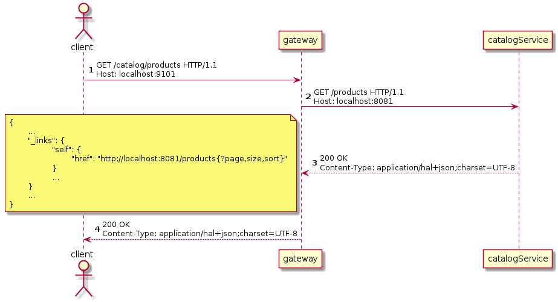

目標
-
理解API Gateway模式
-
使用Spring Cloud Gateway實現API Gateway
理解API Gateway模式
在微服務架構中，每一個微服務都曝露一組細粒度的通信終點。在此架構下，客戶端與微服務之間的通信方式有客戶端微服務直接通信和API Gateway模式兩種。
客戶端與微服務直接通信
在客戶端與微服務直接通信模式中，微服務運行在受信任網絡中，客戶端（如運行在Web瀏覧器中的網頁腳本、移動設備中的應用等）運行在非受信任網絡中。微服務與微服務之間直接通過REST終點通信，客戶端與微服務之間也直接通過REST終點通信。所有的微服務都運行在受信任網絡中，所以來自微服務的請求都是可信的。但是來自微服務的請求和來自客戶端（運行在不受信任網絡）的請求共用通信終點，微服務無法區分它們，所以微服務祗能把所有請求都當作不可信請求處理，校驗所有請求的認證信息。
在實際生產環境中，微服務實例是不斷地被創建和銷毁的。所以客戶端在和微服務直接通信之前，需要發現服務實例。實際的服務部署應如下圖所示，
每個客戶端都需先訪問服務注冊服務，發現服務實例，再與服務實例直接通信。且因服務實例是被不斷創建和銷毁的，客戶端而不時地重新發現服務實例。以運行在Web瀏覧器中的頁面訪問Catalog微服務為例，
-
首先，Web瀏覧器先請求服務注冊服務，發現Catalog服務實例。
-
服務注冊服務訪問一個可用的Catalog服務實例信息，包IP、端口等。
-
然後，Web瀏覧器再直接請求Catalog服務實例。
-
Catalog微服務直接响應結果給Web瀏覧器。
因為微服務實例是不斷被創建和更新，所以Web瀏覧器不時地重新發現服務實例（重新發現策略有每次請求前重新發現、一段時間後定時發現、服務實例响應不可用後重新發現等）。
該模式的優點有：
-
客戶端與微服務直接通信，沒有延遲，沒有單點故障。
該模式的缺點有：
-
客戶端邏輯複雜，需顯式處理服務發現及負載均衡。
-
服務端與客戶端網絡沒有有效隔離，應用需承担更多的安全職責。
API Gateway模式
API Gateway模式在微服務和客戶端之間增加一個服務。微服務依舊是運行在受信任的網絡中，客戶端運行在受信任網絡之外。從受信任網絡之外不能直接訪問任何微服務，客戶端僅能訪問API Gateway，API Gateway從服務注冊處發現微服務，再將請求路由給微服務。以運行在Web瀏覧器中的頁面請求Catalog微服務為例，
-
Web瀏覧器發送請求給APIGateway。
-
APIGateway請求服務注冊服務，發現Catalog微服務的實例。
-
服務注冊服務响應一個可用的Catalog微服務實例。
-
APIGateway將Web瀏覧器的請求路由給Catalog微服務實例。
-
Catalog微服務實例處理請求，再將响應發迴APIGateway。
-
APIGateway將微服務响應返迴給Web瀏覧器。
該模式優點：
-
統一請求入口，方便進行認證、鍳權、審計等通用處理。
-
嚮客戶端隠藏服務端實現，便於微服務變更。
該模式缺點：
-
增加通信延遲。
-
有單點故障風險。
理解Spring Cloud Gateway
該項目提供了一個用於在Spring MVC之上構建API網關的庫。 Spring Cloud Gateway旨在提供一種簡單而有效的方法來路由到API，並為它們提供跨領域的關注，例如：安全性，監視/指標和彈性。
https://spring.io/projects/spring-cloud-gateway
Spring Cloud Gateway的主要特性：
-
構建於Spring Framework 5、Project Reactor和Spring Boot 2.0之上
-
能按任意請求屬性匹配路由
-
路由特定的斷言「predicate」和過濾器「filter」
-
Hystrix Circuit Breaker集成
-
Spring Cloud DiscoveryClient集成
-
容易編寫預判「Predicate」和過濾器「Filter」
-
請求速率限制
-
路徑重寫
Spring Cloud Gateway中三個重要概念：
-
路由「Route」：路由是構建網關的基本單位。其由一個唯一標識、一個目的URI、一組斷言「predicate」和一組過濾器「filter」定義。當所有斷逼都為真時匹配route。
-
斷言「Predicate」：斷言是Java 8函數斷言「Function Predicate」。其接受類型為Spring Framework
ServerWebExchange的輸入。其允許應用開發者匹配HTTP請求的任何部份，例如請求頭或請求參數。 -
過濾器「Filter」：這些是使用特定工廠構造的Spring Framework
GatewayFilter實例。 通過它們，可以在發送下游請求之前或之後修改請求和響應。
Spring Cloud Gateway核心工作由路由完成。客戶端嚮網關發送請求，網關檢測匹配的路由（當路由中所有斷言都為真時匹配），網關再讓請求穿過過濾器鏈，最終發送給目的服務。
請求與路由之間的匹配是通過斷言定義的。由於HTTP請求報文的結構特性，應用程序可以高效地解析請求行和請求頭，但不能高效解析請求消息體（因其是變長的，且相較與請求報文其它部份體積巨大）。所以路由斷言應僅斷言請求行及請求頭。
Spring Cloud Gateway提供了豐富的斷言，應用開發者可以通過斷言工廠構造斷言，匹配請求行或頭的任意部份。
斷言實現為Java 8的 java.util.function.Predicate<T>，斷言工廠其實就是構造 Predicate<ServerWebExchange> 對象。以 org.springframework.cloud.gateway.handler.predicate.AfterRouteRedicateFactory 為例，其以annoymous內部類的形式定義了兼容 Predicate<ServeWebExchange> 的斷言類，並構造其對象實例。
public class AfterRoutePredicateFactory
extends AbstractRoutePredicateFactory<AfterRoutePredicateFactory.Config> {
...
@Override
public Predicate<ServerWebExchange> apply(Config config) {
return new GatewayPredicate() {
@Override
public boolean test(ServerWebExchange serverWebExchange) {
final ZonedDateTime now = ZonedDateTime.now();
return now.isAfter(config.getDatetime());
}
@Override
public String toString() {
return String.format("After: %s", config.getDatetime());
}
};
}
...路由過濾器可以修改進的HTTP請求或出的HTTP响應。過濾器一般僅作用於單個路由，但Spring Cloud Gateway也支持全局過濾器。全局過濾器作用於所有路由。
過濾器的實現與斷言類似，路由特定的過濾器實現為兼容接口 org.springframework.cloud.gateway.filter.GatewayFilter 的對象，全局過濾器則是實現接口 org.springframework.cloud.gateway.filter.GlobalFilter 的對象。以路由特性過濾器工廠 org.springframework.cloud.gateway.filter.factory.AddRequest’HeaderGatewayFilterFactory 為例，過濾器工廠以annoymous內部類的形式定義兼容類，再構造對象。
public class AddRequestHeaderGatewayFilterFactory extends AbstractNameValueGatewayFilterFactory {
public AddRequestHeaderGatewayFilterFactory() {
}
public GatewayFilter apply(NameValueConfig config) {
return new GatewayFilter() {
public Mono<Void> filter(ServerWebExchange exchange, GatewayFilterChain chain) {
String value = ServerWebExchangeUtils.expand(exchange, config.getValue());
ServerHttpRequest request = exchange.getRequest().mutate().header(config.getName(), value).build();
return chain.filter(exchange.mutate().request(request).build());
}
public String toString() {
return GatewayToStringStyler.filterToStringCreator(AddRequestHeaderGatewayFilterFactory.this).append(config.getName(), config.getValue()).toString();
}
};
}
}全局過濾器以接口 GlobalFilter 的實現類形式實現。以 org.springframework.cloud.gateway.filter.ForwardRoutingFilter 為例，其實現接口 GlobalFilter 且實現方法 Mono<Void> filter(ServerWebExchange exchange, GatewayFilterChain chain)。
public class ForwardRoutingFilter implements GlobalFilter, Ordered {
...
@Override
public int getOrder() {
return Ordered.LOWEST_PRECEDENCE;
}
@Override
public Mono<Void> filter(ServerWebExchange exchange, GatewayFilterChain chain) {
URI requestUrl = exchange.getRequiredAttribute(GATEWAY_REQUEST_URL_ATTR);
String scheme = requestUrl.getScheme();
if (isAlreadyRouted(exchange) || !"forward".equals(scheme)) {
return chain.filter(exchange);
}
// TODO: translate url?
if (log.isTraceEnabled()) {
log.trace("Forwarding to URI: " + requestUrl);
}
return this.getDispatcherHandler().handle(exchange);
}
}|
Spring Cloud Gateway官方文檔 Spring Cloud Gateway。 |
理解Cross-Origin Resource Sharing(CORS)
跨來源資源共用（Cross-Origin Resource Sharing (CORS)）是一種使用額外 HTTP 標頭令目前瀏覽網站的使用者代理取得存取其他來源（網域）伺服器特定資源權限的機制。當使用者代理請求一個不是目前文件來源——例如來自於不同網域（domain）、通訊協定（protocol）或通訊埠（port）的資源時，會建立一個跨來源 HTTP 請求（cross-origin HTTP request）。
https://developer.mozilla.org/zh-TW/docs/Web/HTTP/CORS
受「同源政策（Same-Origin policy）」限制，網頁中的腳本祗能請求與網頁相同網域的HTTP資源。「跨來源資源共用機制提供了Web應用跨網域的存取控制，增加跨網域資料傳輸的安全性。
CORS以網域、請求方法和請求頭三個方面控制跨來源資源共用，其在HTTP請求和响應報文中加入一組擴展頭來交換存取控制信息。
| 頭 | 作用域 | 值 | 說明 |
|---|---|---|---|
Origin |
CORS請求，CORS預檢請求 |
網域 |
指明請求者（網頁腳本）的來源網域。 |
Access-Control-Request-Method |
CORS預檢請求 |
HTTP請求方法，多個值之間用逗號分隔 |
請求者將要發送的請求方法。 |
Access-Control-Request-Headers |
CORS預檢請求 |
HTTP頭名穪，多個值之間用逗號分隔 |
請求者將要發送的請求中携帶的頭。 |
Access-Control-Allow-Origin |
CORS响應，CORS預檢响應 |
網域 |
允許與之共用資源的網域。 |
Access-Control-Allow-Credentials |
CORS响應 |
指明當請求的凭證模式「credentials mode」是 |
|
Access-Control-Allow-Methods |
CORS响應，CORS預檢响應 |
HTTP請求方法，多個值之間用逗號分隔 |
被允許在CORS請求中使用的HTTP方法。 |
Access-Control-Allow-Headers |
CORS响應，CORS預檢响應 |
HTTP頭，多個值之間用逗號分隔 |
被允許在CORS請求中使用的HTTP標頭。 |
Access-Control-Max-Age |
CORS响應，CORS預檢响應 |
秒數 |
|
Access-Control-Expose-Headers |
CORS响應，CORS預檢响應 |
HTTP標頭，多個值之間用逗號分隔 |
通過列出標題的名稱來指示哪些標題可以作為響應的一部分公開。 |
一個典型的CORS請求由CORS預檢「CORS-preflight request」和CORS請求兩步組成。
-
客戶端以
OPTIONS方法嚮服務端發送CORS預檢。CORS預檢通過CORS擴展HTTP頭嚮服務端表明預檢項。 -
服務端响應CORS預檢，以HTTP頭形式表明允許的跨來源共用。
對於一些「簡單請求（simple requests）」，可以省略CORS預檢。一個不觸發CORS預檢的簡單請求需滿足以下所有條件：
-
僅允許下列HTTP方法
-
GET -
HEAD -
POST
-
-
僅可包含「CORS安全列表請求標頭（CORS-safelisted request-header）」
-
Acccept -
Accept-Language -
Content-Type -
Last-Event-Id -
DPR -
Save-Data -
Viewport-Width -
Width
-
-
僅允許以下
Content-Type標頭值：-
application/x-www-form-urlencoded -
multupart/form-data -
text/plain
-
-
沒有事件監聽器被注冊到任何用來發出請求的
XMLHttpRequestUpload物件上。 -
請求中沒有
ReadableStream物件被用於上傳。
-
簡單請求無需CORS預檢，可直接發送CORS請求。
-
服務務器在响應中需添加CORS標頭。
|
https://fetch.spec.whatwg.org/#http-cors-protocol[CORS protocol |
實現
首先，借助Spring Initializr生成項目骨架。
TBD
然後，打開 build.gradle 做一些必要的配置。
plugins {
id 'org.springframework.boot' version '2.1.0.RELEASE' (1)
}
apply plugin: 'java'
apply plugin: 'io.spring.dependency-management' (2)
group = 'io.github.rscai.microservices'
version = '0.0.1-SNAPSHOT'
sourceCompatibility = '1.8'
repositories {
mavenCentral()
maven { url 'https://repo.spring.io/milestone' } (3)
}
ext {
set('springCloudVersion', "Greenwich.SR3") (4)
}
dependencies {
implementation 'org.springframework.cloud:spring-cloud-starter-gateway' (5)
implementation 'org.springframework.cloud:spring-cloud-starter-netflix-eureka-client' (6)
testImplementation('org.springframework.boot:spring-boot-starter-test') {
exclude group: 'org.junit.vintage', module: 'junit-vintage-engine'
}
testImplementation 'org.junit.jupiter:junit-jupiter-api'
testRuntimeOnly 'org.junit.jupiter:junit-jupiter-engine'
}
dependencyManagement {
imports {
mavenBom "org.springframework.cloud:spring-cloud-dependencies:${springCloudVersion}" (7)
}
}
test {
useJUnitPlatform()
}
bootRun {
String springProfilesActive = System.properties['spring.profiles.active'] (8)
systemProperty "spring.profiles.active", springProfilesActive
}| 1 | 引入Spring Boot的Gradle插件 org.springframework.boot。 |
| 2 | 引入Spring依賴插件 io.spring.dependency-management。 |
| 3 | 添加Spring里程碑倉庫，以便引用里程碑版本庫。 |
| 4 | 將Spring Cloud版本提取出來設置為變量，從而統一控制Spring Cloud庫的版本。 |
| 5 | 引入 spring-cloud-starter-gateway 至 implementation 範圍依賴。spring-cloud-starter-gateway 引用了Spring Cloud Gateway所有依賴的庫，引用 spring-cloud-starter-gateway 就等同於將所有Spring Cloud Gateway依賴庫。 |
| 6 | 引入 spring-cloud-starter-netflix-eureka-client 至 implementation 範圍依賴。Spring Cloud Gateway支持從Eureka發現服務並通過Eureka維護的微服務元數據自動配置路由。Spring Cloud Gateway依賴Eureka DiscoveryClient實現與Eureka的集成。 |
| 7 | 通過Gradle的dependencyManagement功能統一管理Spring Cloud庫的版本。 |
| 8 | 將Gradle接受到的 spring.profiles.active 系統屬性傳遞給任務 bootRun。通過Gradle運行Spring Boot應用時，就可以以系統屬性的方式指定profile了。
|
Spring Cloud Gateway的自動配置是通過配置屬性 spring.cloud.gateway.enabled 及類 org.springframework.web.reactive.DispatchHandler 激活的，且 spring.cloud.gateway.enabled 缺省值為 true ，DispatchHandler 則被包含在 spring-cloud-starter-gateway` 閶接引用的 spring-webflux 中，所以引入 spring-cloud-starter-gateway 就會激活自動配置，無需使用特定的注解。
@Configuration
@ConditionalOnProperty(name = "spring.cloud.gateway.enabled", matchIfMissing = true) (1)
@EnableConfigurationProperties
@AutoConfigureBefore({ HttpHandlerAutoConfiguration.class,
WebFluxAutoConfiguration.class })
@AutoConfigureAfter({ GatewayLoadBalancerClientAutoConfiguration.class,
GatewayClassPathWarningAutoConfiguration.class })
@ConditionalOnClass(DispatcherHandler.class) (2)
public class GatewayAutoConfiguration {
...| 1 | 當屬性 spring.cloud.gateway.enabled 被設置為 true 時或缺失時，激活自動配置（需結合其它條件）。 |
| 2 | 當類 org.springframework.web.reactive.DispatchHandler 出現在classpath時，激活自動配置。Spring Cloud Gateway是構建於Spring WebFlux（Spring的Reactive Web MVC框架）之上的，Spring Cloud Gateway以 DispatchHandler 為指標，當Spring WebFlux存在於classpath時才配置自身。 |
再然後，通過應用配置文件配置Eureka集成和CORS。
server:
port: 9101 (1)
spring:
application:
name: gateway (2)
cloud:
compatibility-verifier:
enabled: true
gateway:
discovery:
locator:
enabled: true (3)
lowerCaseServiceId: true
forwarded:
enabled: true (4)
x-forwarded:
enabled: true
forEnabled: true
portEnabled: true
prefixEnabled: true
globalcors: (5)
corsConfigurations:
'[/**]':
allowedOrigins: '*'
allowedHeaders: '*'
allowedMethods: '*'
eureka:
client:
serviceUrl:
defaultZone: http://localhost:9001/eureka/ (6)| 1 | 設置網關監聽的端口。 | ||||||||||||
| 2 | 設置應用名穪。 | ||||||||||||
| 3 | 設置屬性 spring.cloud.gateway.discovery.locator.enabled 為 true 將激活配置Bean org.springframework.cloud.gateway.discovery.DiscoveryClientRouteDefinitionLocator。
GatewayDiscoveryClientAutoConfiguration.java
GatewayDiscoveryClientAutoConfiguration.java
|
||||||||||||
| 4 | 設置屬性 spring.cloud.gateway.forwarded.enabled 為 true （缺省值為 true ）激活 org.springframework.cloud.gateway.filter.headers.ForwardedHeadersFilter 配置。ForwardedHeadersFilter 將請求中的所有頭都分發給目的微服務。
GatewayAutoConfiguration.java
|
||||||||||||
| 5 | 設置屬性 spring.cloud.gateway.x-forwarded.enabled 為 true （缺省值為 true ）激活 org.springframework.cloud.gateway.filter.XForwardedHeadersFilter 配置。XForwardedHeadersFilter 將在將請求分發給目的微服務之前嚮其中添加 X-Forward-* 標頭。
GatewayAutoConfiguration.java
還得我們的目的微服務是Hypermedia-Driven RESTFul Web服務，其會在响應體中帶上絕對路徑的資源URL。但是目的微服務的根上下文跟網關的根上下不同，網關是重寫了請求路徑才匹配目的微服務的URL路徑的。以請求所有Catalog Product為例，

|
||||||||||||
| 6 | 配置CORS。在API Gateway模式下，所有請求和响應都經過網關。所以在網關處處理CORS是最合理的。
|
最後，在命令行中執行：
./gradlew bootRun -Dspring.profiles.active=dev網關就會監聽在端口 9101，可以通過URL http://localhost:9101/<serviceId>; 訪問所有注冊在Eureka的微服務了。
總結
本章我們使用Spring Cloud Gateway構建API Gateway，並集成Eureka，使其可以自動從Eureka中發現微服務並路由請求給微服務。我們在網關中配置CORS，使網關代理的所有資源都可以被跨來源共用。